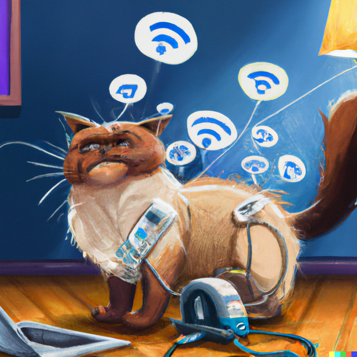

Netwerken zijn een aparte tak van sport en steeds meer zie ik netwerken bij particulieren. Dat is begonnen met de introductie van WiFi bij mensen thuis. Vaak was WiFi de eerste kennismaking met netwerken. We zien steeds meer andere netwerken hun intrede doen, denk hierbij aan bedrade ethernet netwerken, Zigbee en straks Matter. En netwerken worden al lang niet alleen meer gebruikt voor de laptop en mobiele telefoon. Smart TV's, Philips HUE, Playstation, X-Box, Amazon's Alexa en Google Home zijn voorbeelden van nieuwe netwerk toepassingen. Het toepassen van meerdere access points en mesh netwerk technieken in huis wordt steeds belangrijker. Een goed advies nu is een zorg minder voor later, daar zorg ik voor.
